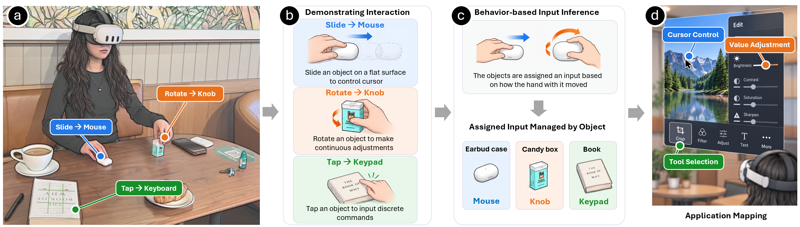
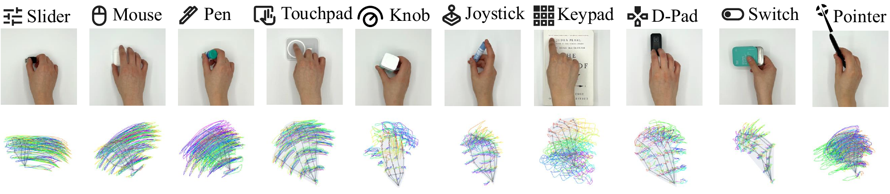
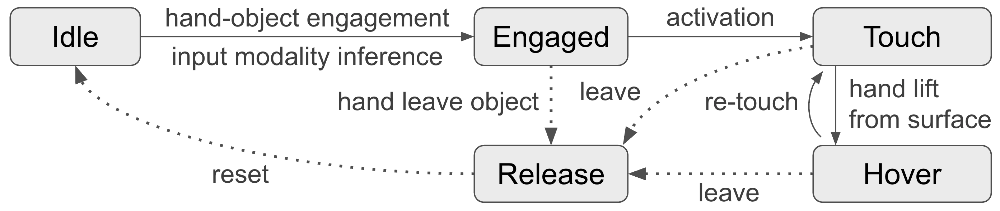
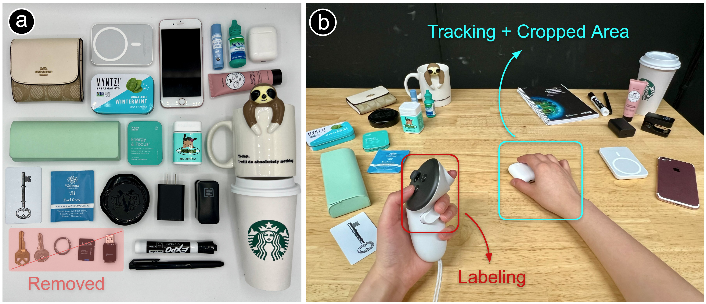
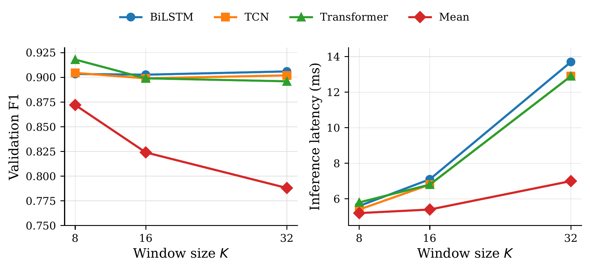
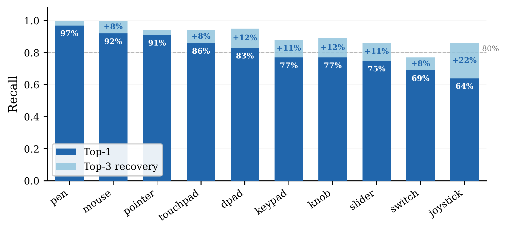
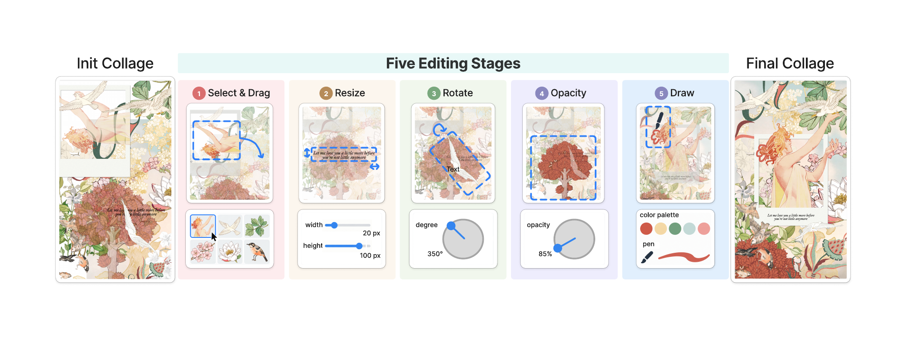
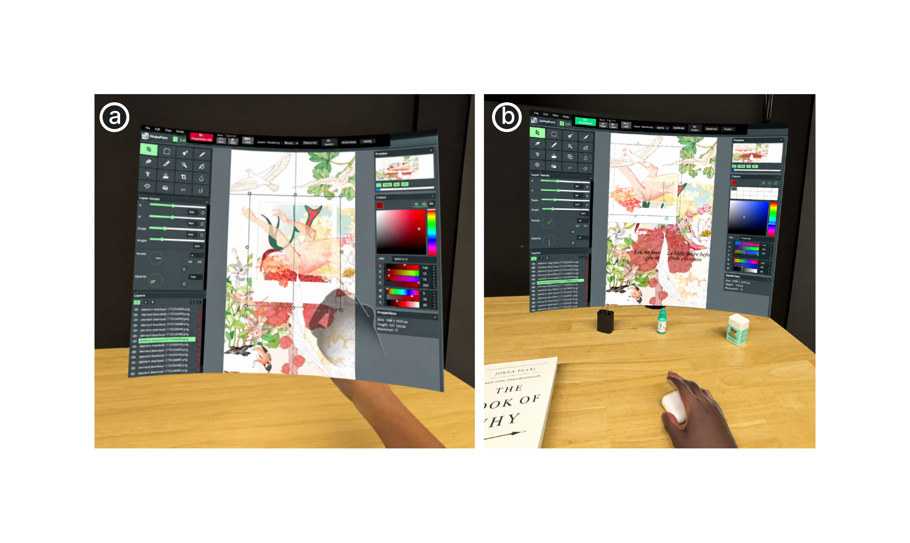
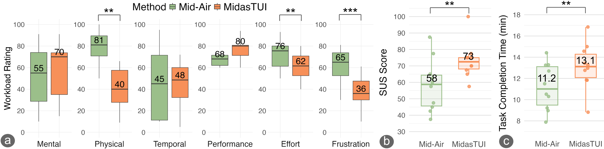
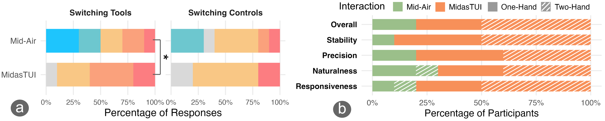

Demonstrate a movement with an everyday object to turn it into a mouse, knob, keypad, or other tangible control.
Abstract
While wearable displays can bring digital workspaces anywhere, interaction remains limited by mid-air gestures that lack tactile feedback and induce fatigue, or controllers that are cumbersome to carry.
We present MidasTUI, a system that instantly transforms arbitrary everyday objects into opportunistic tangible user interfaces through brief interaction demonstrations. For example, a user can slide an earbud case across a table as a mouse, enabling opportunistic interaction without carrying a dedicated input device.
MidasTUI detects when a user is holding and moving an object using the wearable display camera and a Transformer-based temporal classifier. It then infers the intended input modality (e.g., slider, mouse, keypad) from hand movement and maps the tracked hand-object interaction to an application function.
Our evaluations demonstrate reliable cross-object and cross-user generalization. A comparative user study further shows that grounding interaction in everyday objects reduces physical burden and improves perceived usability and control relative to mid-air interaction.
Video
Result Highlights
Recognition performance and user experience were evaluated separately: a 16-participant technical evaluation and a 10-participant comparative application study.
MidasTUI System
MidasTUI turns available objects into controls through four connected stages: Move Together detects hand–object engagement; Summon infers the intended input from a demonstration; the TUI Manager registers and activates the object; and interaction tracking maps its motion to an application function.

Move Together: Detect Engagement
Passthrough-camera frames are cropped around a tracked hand. A FastViT visual backbone and temporal Transformer distinguish holding and moving an object from reaching, hovering, or resting contact. The same model runs on each hand separately to support bimanual use.
Summon: Demonstrate an Input
The system records the positions of 26 hand joints and their motion over time. A generalized model presents the three most likely input types. Confirmed choices can provide labeled demonstrations for a personalized model.

TUI Management and Interaction
Define Where Objects Become Controls
Users calibrate a tabletop interaction area by pointing at four corners. Objects manipulated within this area can activate a TUI; activity outside it remains ordinary physical interaction. This lets the same cup act as a knob in the workspace and as a drinking vessel elsewhere.
Reuse Registered Objects
The TUI Manager stores object-to-input assignments. Once recognized as a registered TUI, an object can be activated again without repeating the demonstration. Its interaction state determines when movement should produce application input.

One or Two Hands
The prototype maps tangible inputs to five application controls: cursor, keypad, slider, dial, and pen. Users can switch objects with one hand or distribute controls across both hands, such as moving a cursor with one object while adjusting a parameter with another.
Everyday Objects, Tangible Controls
The paper demonstrates tangible control in a web-based Photoshop workspace. A book cover supports button clicks, a key controls a slider, a coffee cup acts as a knob, an earbud case moves the cursor, and an eyedropper supports freehand drawing.

Technical Evaluation
Sixteen participants contributed to the recognition evaluations. Move Together was evaluated with 20 everyday objects after five small objects were excluded from the initial set of 25 because of low detection accuracy. Its training data came from one author, with augmentation; evaluation tested performance across participants.

Engagement Detection
An 8-frame Transformer achieved 0.918 F1, 92.1% accuracy, and 0.968 AUROC. GPU inference took 5.6 ms per clip on an RTX A6000. In the headset-plus-laptop deployment using a Meta Quest 3 and RTX 3080 laptop, the system ran at 42 FPS; the GPU latency is not a standalone-headset measurement.

Input Modality Inference
The Summon dataset contained 640 demonstrations: 16 participants × 10 modalities × 4 repetitions. Leave-one-participant-out evaluation tested a generalized model without training on the target user.
| Model | Top-1 accuracy | Evaluation context |
|---|---|---|
| Generalized Summon | 80.9% | No target-user data at training time |
| Generalized top-3 suggestions | 90.8% | Correct input among the first three suggestions |
| Personalized Summon | 97.5% | Adapted using target-user demonstrations |
The personalized model improved top-1 accuracy by 16.6 percentage points. Generalized recognition was strongest for pen, mouse, and pointer, while joystick and switch were more ambiguous. Top-3 suggestions recovered many of these errors.

Comparative User Study
Ten participants completed a photo-collage task with MidasTUI and Mid-Air interaction. They selected and positioned content, adjusted parameters, and performed drawing operations. Technique order was counterbalanced. Both one- and two-handed workflows were explored within each technique, rather than tested as independent controlled factors.


The system used a Meta Quest 3 with passthrough and hand tracking, paired with an Intel Core i7 / RTX 3080 laptop. The evaluation collected NASA-TLX workload, System Usability Scale scores, task time, switching ratings, and preferences.
Workload, Usability, and Performance
| Measure | MidasTUI | Mid-Air |
|---|---|---|
| Physical demand (0–100) | 40 | 81 |
| Effort (0–100) | 61.5 | 75.5 |
| Frustration (0–100) | 36 | 65 |
| SUS (0–100) | 73.2 | 58.2 |
| Completion time (min) | 13.14 | 11.20 |
MidasTUI significantly reduced physical demand, effort, and frustration, and received a higher usability score. Mental demand, temporal demand, and perceived performance did not differ significantly. Mid-Air was faster in the collage task, showing that physical support and improved experience came with interaction overhead.

Switching tools was rated easier with MidasTUI: median 6.0 versus 4.0. Switching among controls assigned to the same tool did not differ significantly; both techniques received a median of 5.0.
Preference and Practical Tradeoffs
8 of 10 participants preferred MidasTUI overall: five favored its two-handed configuration and three its one-handed configuration. MidasTUI was preferred by 9/10 for stability, 8/10 for perceived precision, 8/10 for responsiveness, and 7/10 for naturalness. These are subjective preferences, not objective accuracy measurements.

Participants valued physical grounding and the ability to distribute control across hands. Reported difficulties included delayed hand–object state changes, fine mouse and knob control, and the tabletop space needed for bimanual manipulation. The study used a fixed object set and one compound editing task, so these findings do not establish performance across all objects or applications.
Takeaways
- Brief demonstrations can turn available objects into familiar controls without carrying dedicated input hardware.
- Generalized predictions support first use; confirmed demonstrations can improve a personalized model.
- Tangible control improved perceived usability and reduced physical burden in the evaluated task, while Mid-Air completed that task faster.
- Reliable engagement detection, suitable objects, and clear control mappings remain central to practical use.
Citation
@misc{ying2026midastui,
author = {Ying, Wen and Chen, Xuweiyi and Cheng, Zezhou and Heo, Seongkook},
title = {MidasTUI: Instant Tangible User Interfaces for Wearable Displays using Everyday Objects},
year = {2026}
}